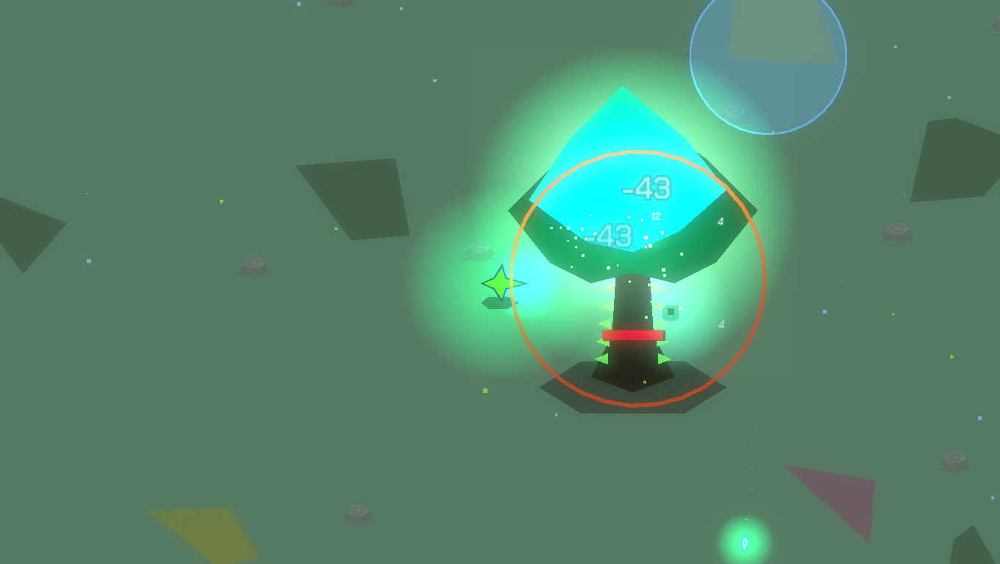
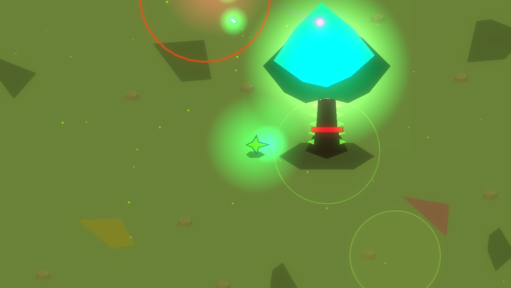
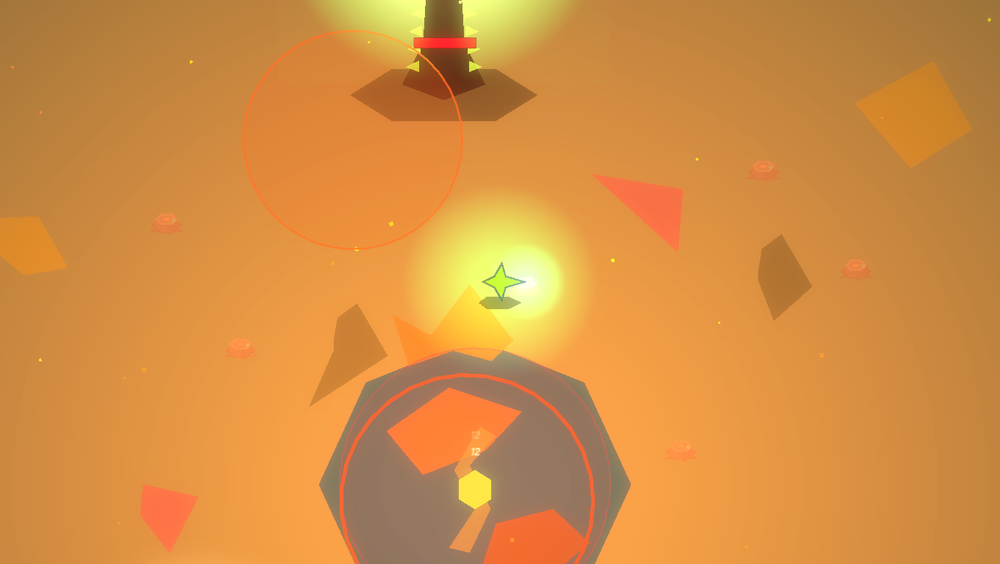
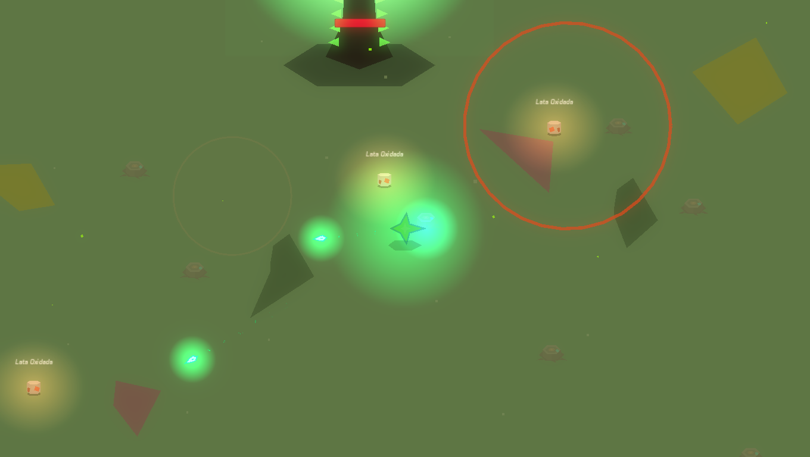
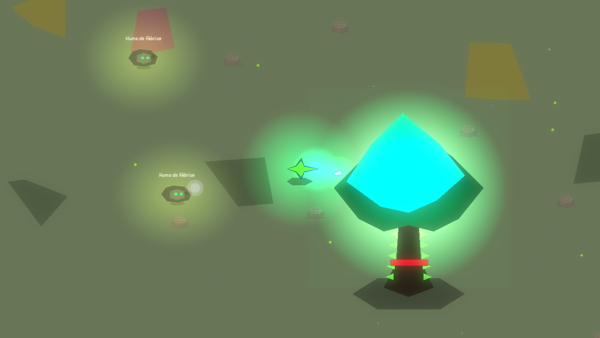

02 Un problema que no se derrota
La contaminación no es un monstruo con barra de vida final: es sistémica y cíclica, como en la realidad. Por eso el juego no termina.
La única meta posible es gestionarla, ralentizarla y mantener vivo el ecosistema el mayor tiempo posible. La partida no se mide en victoria, sino en tiempo: oleada, etapa, biomasa y segundos de ecosistema en pie.
Cada enemigo y cada jefe es un problema ambiental con forma —microplástico, humo de fábrica, red fantasma, radiación, pesticidas—. Aprender a leerlos es aprender a leer el mundo.
— Pilares de diseño
Aprender jugando, no leyendo
Datos por feedback de combate y popups cortos, nunca bloqueantes (≤ 3–4 s).
Infinito, no repetitivo
El mundo evoluciona para que la hora 3 se sienta distinta de la hora 1.
Habilidad sobre grind
Progresión por maestría, no por inflar números.
Cada enemigo enseña algo
Ningún monstruo genérico: cada uno mapea a un problema real.
El mundo reacciona a ti
Paleta, partículas y sonido: un panel vivo del ecosistema.

01 ¿Qué es Dirty Road?
Un survival action top-down en 2D donde el jugador defiende un Árbol vivo —último símbolo de un ecosistema sano— frente a oleadas interminables de enemigos que representan problemas ambientales reales.
La travesía sigue a Renata y al nodo jugable Quark por un valle que cambia de piel en cada etapa: mismo terreno, nueva amenaza, nueva lección.


Etapa 6 · E-waste

Etapa 8 · Pesticidas
 Dirty Road
Dirty Road
DirtyRoad
Survival action 2D infinito · educativo · ambiental
No hay final. No hay pantalla de victoria. No hay «jefe final de la contaminación».


Etapa 3 · Océanos

Etapa 5 · Lluvia ácida

Etapa 7 · Nuclear

Etapa 9 · Deforestación
07 Descargar
github.com/l1teSG/dirty-road-godotJuego completo y gratuito. APK para Android. Escanea el código para bajar la última versión.
tu código QR
08 Equipo
Programación principal GDScript, mecánicas e integración Godot.
Diseño de assets y programación GDScript.
Investigación, revisión teórica e histórica y programación GDScript.
09 Marco académico
Proyecto de la Articulación SENA (Técnico en Desarrollo de Software) con la I.E. Técnico Industrial «Julio Flórez», especialidad Sistemas Informáticos.
Software propietario · todos los derechos reservados.
Mantén vivo el ecosistema el mayor tiempo posible.

06 Las 10 etapas

Etapa 2 · Vertederos

Etapa 4 · Industrial
Etapa 6 · E-waste

Etapa 10 · Clima
— Un ciclo sin fin
Las etapas se heredan: los enemigos de una vuelven en la siguiente, con más vida y daño. No hay final; el reto es cuánto tiempo sobrevive el ecosistema. La décima oleada de cada etapa es de jefe y no tiene reloj: solo cierra cuando cae.
03 El ciclo de juego
Sobrevives una oleada cronometrada: los enemigos aparecen mientras corre el reloj. Matarlos no adelanta la oleada —el reloj manda—, así que proteger el Árbol importa tanto como eliminar.
Al cerrar la oleada llega un descanso breve y la opción de comprar mejoras con biomasa. La décima oleada es de jefe, sin reloj: solo termina cuando el jefe cae.
Al acabar la etapa el juego no avanza solo: espera a que cruces la puerta y vuelve a empezar con el mismo valle, otra piel y enemigos heredados.
04 Aprender jugando
El sistema educativo es un pilar, no un extra: se apoya en la Teoría del Aprendizaje Significativo y la gamificación para entregar cada dato dentro de la acción.
Todo es breve y ajustable —escala, posición, duración, sonido— y el mundo mismo enseña: su paleta, partículas y audio son un panel vivo del estado del ecosistema.
05 Mecánicas clave
Combate a distancia
Ataque automático o manual; dash con invulnerabilidad.
Biomasa
Moneda sin tope; el súper cuesta 10.
Cartas acumulables
Mejoras que reaplican su efecto en cada compra.
Jefes con identidad
Uno por etapa, con patrones y proyectiles propios.
Controles táctiles
Doble joystick virtual y botones en pantalla, para Android.
El mundo no se salva: se mantiene vivo.